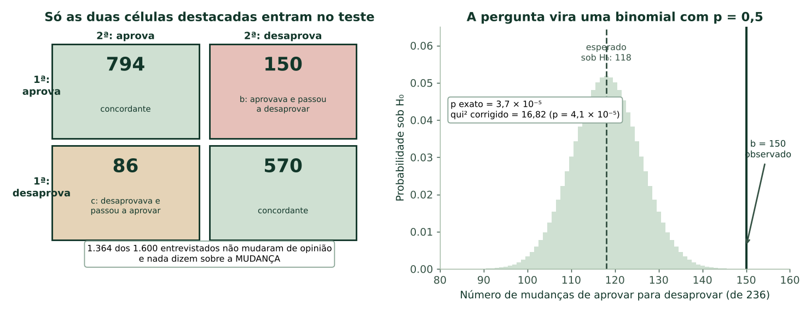
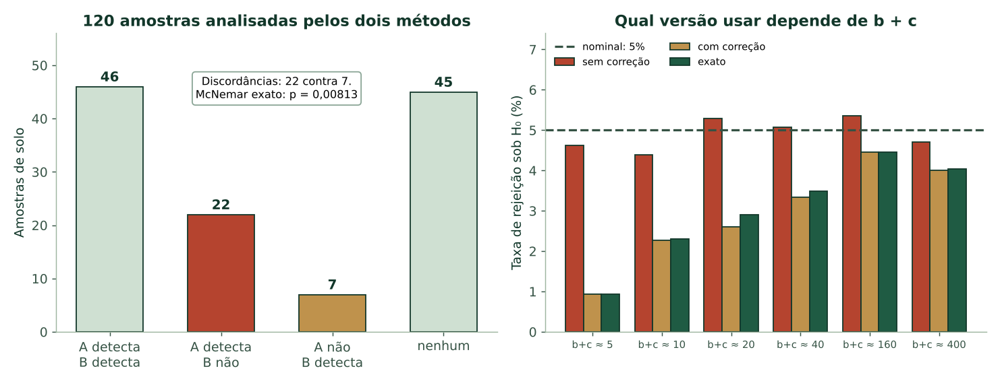

Teste de McNemar
Compara duas proporções medidas nas mesmas unidades, usando apenas os pares que mudaram de resposta.
Comece por aqui
Quando as mesmas pessoas são medidas duas vezes, ou quando dois métodos são aplicados à mesma amostra, a tabela resultante não pode ser analisada pelo qui-quadrado de independência. A razão é simples: aquele teste pergunta se as duas medidas são independentes, e a resposta é obviamente não — são da mesma unidade. A pergunta certa é outra: a proporção mudou?
Das 1.600 pessoas do exemplo desta ficha, 1.364 deram a mesma resposta nas duas pesquisas. Elas nada dizem sobre mudança. A informação está nas 236 que mudaram: 150 passaram de aprovar para desaprovar e 86 fizeram o caminho inverso. A pergunta vira "150 e 86 são compatíveis com uma divisão meio a meio?".
O que é o teste
Numa tabela \(2\times2\) de medidas pareadas, as células da diagonal contêm as unidades que não mudaram, e as de fora da diagonal, \(b\) e \(c\), as que mudaram em cada direção. Sob a hipótese de que a proporção não mudou, cada unidade discordante tem a mesma chance de ter mudado numa direção ou na outra. A hipótese vira, portanto, uma binomial com \(p=0{,}5\) e \(b+c\) ensaios.

Aplicado à mesma tabela, ele devolve \(\chi^2=788{,}3\) com \(p<10^{-170}\) — e responde a "a opinião na segunda pesquisa depende da opinião na primeira?". A resposta é sim, trivialmente: pessoas tendem a manter opinião. Esse teste não diz nada sobre a questão de interesse, que é se o nível de aprovação mudou.
Pressupostos e como verificá-los
| Pressuposto | Por que importa | Como verificar |
|---|---|---|
| Pares definidos pelo delineamento | O pareamento vem do estudo, não dos dados. | Protocolo. |
| Pares independentes entre si | A dependência permitida é só dentro do par. | Delineamento. |
| Resposta binária nas duas medidas | O teste é para tabelas 2 × 2 pareadas. | Natureza da variável; para mais categorias, Stuart–Maxwell. |
| b + c suficientemente grande para a aproximação | A qui-quadrado é assintótica. | Regra prática: b + c ≥ 25; abaixo disso, use a versão exata. |
| Independência entre as medidas | Não é exigida: elas são justamente dependentes. | — |
A simulação desta ficha mostra que a versão sem correção é a que fica mais perto de 5% em todos os cenários testados, e que a corrigida e a exata são conservadoras — com b + c perto de 400 elas ainda gastam menos de 4,5%. A recomendação prática: com b + c pequeno, use a exata, que garante que a taxa nunca ultrapasse o nominal; com b + c grande, a sem correção é a mais fiel ao nível declarado. Note que o R aplica a correção por padrão.
Hipóteses e estatística de teste
Em que:
- \(b\)
- unidades que mudaram de 1 para 2
- \(c\)
- unidades que mudaram de 2 para 1
- \(\pi_{1\cdot},\ \pi_{\cdot1}\)
- proporções marginais da primeira e da segunda medida
- \(b+c\)
- número de pares discordantes: o tamanho efetivo da amostra
Exemplo numérico, passo a passo
| 2ª: aprova | 2ª: desaprova | Total | |
|---|---|---|---|
| 1ª: aprova | 794 | 150 = b | 944 |
| 1ª: desaprova | 86 = c | 570 | 656 |
| Total | 880 | 720 | 1 600 |
A aprovação caiu de 944/1600 = 59,00% para 880/1600 = 55,00%: quatro pontos percentuais.
A versão exata calcula \(2\,P(X\leq86)\) com \(X\sim\text{Bin}(236;\,0{,}5)\), o que dá \(3{,}72\times10^{-5}\).
Repare que os 1.364 concordantes não aparecem em nenhuma das contas. O tamanho efetivo da amostra é 236, não 1.600.
Medidas de efeito
| Medida | Fórmula | No exemplo |
|---|---|---|
| Razão de chances de mudança | b / c | 1,744; IC 95% [1,338; 2,274] |
| Diferença de proporções | (b − c)/n | +4,00 pontos; IC 95% [+2,13; +5,87] |
| Proporção de mudanças | (b + c)/n | 14,75% dos entrevistados |
| Concordância bruta | (a + d)/n | 85,25% |
Propriedades
- É o caso \(k=2\) do teste Q de Cochran.
- Equivale ao teste do sinal aplicado às mudanças, e à regressão logística condicional com um par por estrato.
- Testa homogeneidade marginal, não concordância: duas medidas podem ter marginais idênticas e concordar pouco.
- O tamanho efetivo da amostra é \(b+c\), e não \(n\): o poder depende de quantas unidades mudaram.
- Para tabelas \(k\times k\) pareadas, a extensão é o teste de Stuart–Maxwell.
- A versão exata é conservadora; a versão sem correção é a mais fiel ao nível nominal.
Como interpretar os resultados
| Elemento | O que informa | Cuidado |
|---|---|---|
| McNemar chi-squared | A estatística, com 1 grau de liberdade. | O R aplica a correção por padrão. |
| p-value | Evidência de mudança na proporção. | Não mede concordância. |
| b e c | As discordâncias em cada direção. | Reporte-as sempre. |
| b + c | Tamanho efetivo da amostra. | É ele que determina o poder. |
| Razão b/c | Magnitude da assimetria. | Com intervalo de confiança. |
| Kappa de Cohen | Concordância além do acaso. | Pergunta diferente da do teste. |
No segundo exemplo desta ficha, os dois métodos de detecção têm kappa de 0,524 — concordância moderada — e McNemar significativo (p = 0,008). As duas informações se complementam: os métodos concordam razoavelmente, e o método A detecta sistematicamente mais que o B. Uma tabela pode ter marginais iguais (McNemar não significativo) e concordância péssima, se as discordâncias se equilibrarem nas duas direções.
Como executar no R e em Python
Onde executar o código em Python
Não é preciso instalar nada: o Google Colab é um computador na nuvem, gratuito, que executa Python pelo navegador e já traz as bibliotecas usadas aqui (numpy, scipy e matplotlib).
mcnemar.test() está no pacote stats, já instalado com o R, e aplica a correção de continuidade por padrão (correct = FALSE a desliga). A versão exata se obtém com binom.test(b, b + c, p = 0.5) ou com exact2x2::mcnemar.exact(). Para a concordância, DescTools::CohenKappa(); para tabelas \(k\times k\) pareadas, DescTools::StuartMaxwellTest().
mcnemar.test(Desempenho) # com correção (padrão)
mcnemar.test(Desempenho, correct = FALSE)
binom.test(b, b + c, p = 0.5) # exato
Exemplo de aplicação
Contexto dos dados
O primeiro exemplo usa os dados de Agresti (1990) sobre o desempenho presidencial avaliado por 1.600 entrevistados em duas pesquisas sucessivas — é o conjunto que acompanha a documentação de mcnemar.test() no R. O segundo é fictício: 120 amostras de solo analisadas por dois métodos de detecção de um patógeno, cada amostra pelos dois. A ficha termina com uma simulação sobre qual versão do teste usar.
Código em R
# Teste de McNemar: exemplo completo ----
# Pacotes: stats (base), exact2x2 (versão exata), DescTools (kappa, IC)
# install.packages(c("exact2x2", "DescTools"))
# PARTE 1 - o exemplo padrão: duas pesquisas com as MESMAS pessoas
# Fonte: Agresti (1990), p. 350; é o exemplo da documentação de mcnemar.test()
Desempenho <- matrix(c(794, 86, 150, 570), nrow = 2,
dimnames = list("1ª pesquisa" = c("aprova", "desaprova"),
"2ª pesquisa" = c("aprova", "desaprova")))
Desempenho
addmargins(Desempenho)
prop.table(margin.table(Desempenho, 1)) # aprovação na 1ª
prop.table(margin.table(Desempenho, 2)) # aprovação na 2ª
# O teste
mcnemar.test(Desempenho) # com correção de continuidade (padrão)
mcnemar.test(Desempenho, correct = FALSE)
b <- Desempenho[1, 2]; c_ <- Desempenho[2, 1]
binom.test(b, b + c_, p = 0.5) # versão exata
# A conta, à mão
(abs(b - c_) - 1)^2 / (b + c_) # com correção
(b - c_)^2 / (b + c_) # sem correção
# Medidas de efeito
b / c_ # razão de chances de mudança
exp(log(b/c_) + c(-1, 1) * 1.96 * sqrt(1/b + 1/c_))
n <- sum(Desempenho)
(b - c_) / n # diferença de proporções
# IC da diferença (método de Wald para dados pareados):
dif <- (b - c_)/n
ep <- sqrt(b + c_ - (b - c_)^2/n) / n
dif + c(-1, 1) * 1.96 * ep
# Por que o qui-quadrado de independência seria a pergunta errada
chisq.test(Desempenho, correct = FALSE) # responde a outra coisa
# PARTE 2 - concordância entre dois métodos (dados fictícios)
metodos <- matrix(c(46, 7, 22, 45), nrow = 2,
dimnames = list("método A" = c("detecta", "não detecta"),
"método B" = c("detecta", "não detecta")))
metodos
mcnemar.test(metodos)
mcnemar.test(metodos, correct = FALSE)
binom.test(metodos[1,2], metodos[1,2] + metodos[2,1], p = 0.5) # exato
library(exact2x2)
mcnemar.exact(metodos)
# Concordância, que é outra pergunta
library(DescTools)
CohenKappa(metodos, conf.level = 0.95)
sum(diag(metodos)) / sum(metodos) # concordância bruta
# PARTE 3 - extensões
# Tabelas k x k pareadas: teste de homogeneidade marginal de Stuart-Maxwell
# DescTools::StuartMaxwellTest(tabela)
# Três ou mais medidas binárias: teste Q de Cochran (ver a ficha correspondente)
# Gráficos
par(mfrow = c(1, 2))
barplot(c(Desempenho[1,2], Desempenho[2,1]), names.arg = c("aprova -> desaprova", "desaprova -> aprova"),
col = c("firebrick", "darkorange"), ylab = "Entrevistados", main = "Só as discordâncias")
mosaicplot(Desempenho, color = TRUE, main = "Tabela completa")
par(mfrow = c(1, 1))
A mesma análise em Python, com os resultados
Cole o código em um notebook do Google Colab ↗ e execute com Shift+Enter. Os valores abaixo são a saída desse código.
# Bibliotecas: numpy, scipy e matplotlib (já instaladas no Google Colab)
import numpy as np
from scipy import stats
# ===================================================================
# PARTE 1 - o exemplo padrão: duas avaliações das MESMAS pessoas
# 1.600 entrevistados opinaram sobre o desempenho de um presidente em duas
# pesquisas sucessivas. Fonte: Agresti (1990), p. 350; é o exemplo de
# mcnemar.test() na documentação do R.
tab = np.array([[794, 150], [86, 570]], dtype=float)
rot_l = ["1ª pesquisa: aprova", "1ª pesquisa: desaprova"]
rot_c = ["2ª: aprova", "2ª: desaprova"]
print("Desempenho presidencial em duas pesquisas sucessivas (Agresti, 1990)")
print(f"{'':<24}{rot_c[0]:>14}{rot_c[1]:>15}{'total':>9}")
for i in range(2):
print(f"{rot_l[i]:<24}{int(tab[i,0]):14d}{int(tab[i,1]):15d}{int(tab[i].sum()):9d}")
print(f"{'total':<24}{int(tab[:,0].sum()):14d}{int(tab[:,1].sum()):15d}{int(tab.sum()):9d}")
n = tab.sum()
p1 = tab[0].sum()/n; p2 = tab[:,0].sum()/n
print(f"\nAprovação na 1ª pesquisa: {100*p1:.2f}% na 2ª: {100*p2:.2f}% "
f"diferença: {100*(p1-p2):+.2f} pontos")
# 1. Só as células DISCORDANTES carregam informação
b, c = tab[0,1], tab[1,0]
print(f"\nAs duas células concordantes (794 e 570) somam {int(tab[0,0]+tab[1,1])} pessoas")
print("que não mudaram de opinião: elas nada dizem sobre a MUDANÇA.")
print(f"As discordantes: b = {int(b)} mudaram de aprovar para desaprovar,")
print(f" c = {int(c)} mudaram de desaprovar para aprovar.")
print(f"A pergunta é se {int(b)} e {int(c)} são compatíveis com uma divisão meio a meio.")
# 2. As três formas do teste
chi_c = (abs(b - c) - 1)**2 / (b + c)
chi_s = (b - c)**2 / (b + c)
print(f"\nMcNemar com correção de continuidade: qui² = {chi_c:.4f}, gl = 1, "
f"p = {stats.chi2.sf(chi_c,1):.4e}")
print(f"McNemar sem correção: qui² = {chi_s:.4f}, gl = 1, "
f"p = {stats.chi2.sf(chi_s,1):.4e}")
p_exato = min(1.0, 2*stats.binom.cdf(min(b,c), b+c, 0.5))
print(f"Versão exata (binomial com p = 0,5): p = {p_exato:.4e}")
print(f"scipy: {stats.chi2_contingency(np.array([[b,0],[0,c]]))[0]:.4f} não é o caminho;")
print(" use statsmodels.stats.contingency_tables.mcnemar ou a conta acima.")
# 3. Medidas de efeito
print(f"\nRazão de chances de mudança (b/c) = {b/c:.4f}")
se_lor = np.sqrt(1/b + 1/c)
print(f"IC 95% = [{np.exp(np.log(b/c)-1.96*se_lor):.4f}; {np.exp(np.log(b/c)+1.96*se_lor):.4f}]")
dif = (b - c)/n
se_dif = np.sqrt((b + c - (b-c)**2/n))/n
print(f"Diferença de proporções = {dif:+.6f} ({100*dif:+.3f} pontos percentuais)")
print(f"IC 95% = [{100*(dif-1.96*se_dif):+.3f}; {100*(dif+1.96*se_dif):+.3f}] pontos")
print(f"Proporção de mudanças = {100*(b+c)/n:.2f}% dos entrevistados")
# 4. Por que o teste de independência seria a pergunta errada
qui_ind, p_ind, gl_ind, esp_ind = stats.chi2_contingency(tab, correction=False)
print(f"\nSe aplicássemos o qui-quadrado de independência a esta tabela:")
print(f" qui² = {qui_ind:.2f}, p = {p_ind:.3e}")
print("Esse teste responde a 'a opinião na 2ª pesquisa depende da opinião na 1ª?'")
print("— pergunta trivial, cuja resposta é obviamente sim. O interesse está em saber")
print("se a PROPORÇÃO de aprovação mudou, e é a isso que McNemar responde.")
# ===================================================================
# PARTE 2 - a mesma conta em um delineamento pareado de diagnóstico
# Dados fictícios: 120 amostras de solo analisadas por dois métodos,
# cada amostra pelos dois. Resultado: detecta ou não detecta o patógeno.
print("\n" + "=" * 70)
print("Dados fictícios: 120 amostras de solo, dois métodos de detecção")
tab2 = np.array([[46, 22], [7, 45]], dtype=float)
print(f"{'':<22}{'B detecta':>12}{'B não detecta':>15}{'total':>8}")
for i, r in enumerate(["A detecta", "A não detecta"]):
print(f"{r:<22}{int(tab2[i,0]):12d}{int(tab2[i,1]):15d}{int(tab2[i].sum()):8d}")
b2, c2 = tab2[0,1], tab2[1,0]; n2 = tab2.sum()
print(f"\nTaxa de detecção: método A = {100*tab2[0].sum()/n2:.2f}%, "
f"método B = {100*tab2[:,0].sum()/n2:.2f}%")
print(f"Discordâncias: b = {int(b2)} (só A detecta), c = {int(c2)} (só B detecta)")
chi2c = (abs(b2-c2)-1)**2/(b2+c2)
print(f"McNemar com correção: qui² = {chi2c:.4f}, p = {stats.chi2.sf(chi2c,1):.5f}")
print(f"McNemar sem correção: qui² = {(b2-c2)**2/(b2+c2):.4f}, "
f"p = {stats.chi2.sf((b2-c2)**2/(b2+c2),1):.5f}")
pe2 = min(1.0, 2*stats.binom.cdf(min(b2,c2), b2+c2, 0.5))
print(f"Versão exata: p = {pe2:.6f} <- com b + c = {int(b2+c2)}, é a versão a usar")
print(f"Razão de chances de discordância = {b2/c2:.4f}")
print(f"Concordância observada = {100*(tab2[0,0]+tab2[1,1])/n2:.2f}%")
pe_ = ((tab2[0].sum()*tab2[:,0].sum() + tab2[1].sum()*tab2[:,1].sum())/n2**2)
kappa = ((tab2[0,0]+tab2[1,1])/n2 - pe_)/(1 - pe_)
print(f"Kappa de Cohen = {kappa:.4f} (concordância além do acaso)")
# ===================================================================
# PARTE 3 - quando usar a versão exata: simulação
print("\n" + "=" * 70)
print("Correção de continuidade ou versão exata? Simulação com proporções IGUAIS.")
print("(20.000 experimentos; n = 100 pares; probabilidade de discordância variável)")
rng = np.random.default_rng(99)
M = 20000
print(" P(discordar) b+c médio sem correção com correção exato")
for npares, pd in ((100, 0.05), (100, 0.10), (100, 0.20), (100, 0.40), (400, 0.40), (1000, 0.40)):
r_s = r_c = r_e = 0; soma_bc = 0
for _ in range(M):
d = rng.binomial(npares, pd) # pares discordantes
bb = rng.binomial(d, 0.5) if d > 0 else 0
cc = d - bb; soma_bc += d
if d == 0: continue
if (bb-cc)**2/d > stats.chi2.ppf(0.95,1): r_s += 1
if (abs(bb-cc)-1)**2/d > stats.chi2.ppf(0.95,1): r_c += 1
if min(1.0, 2*stats.binom.cdf(min(bb,cc), d, 0.5)) < 0.05: r_e += 1
print(f" {pd:.2f} {soma_bc/M:7.2f} {100*r_s/M:7.2f}% "
f"{100*r_c/M:7.2f}% {100*r_e/M:6.2f}% (n = {npares})")
print("\nA versão SEM correção fica perto de 5% em todos os cenários. A corrigida e a")
print("exata ficam sistematicamente abaixo, e a convergência é lenta: mesmo com")
print("b + c perto de 400 elas ainda gastam menos de 4,5% dos 5% disponíveis.")
print("A razão é a discretude: b + c é fixo e b só assume valores inteiros, de modo")
print("que poucos valores-p são possíveis e raramente algum cai exatamente em 0,05.")
print("\nNa prática: com b + c pequeno (menos de 25), use a versão exata, que garante")
print("que a taxa nunca EXCEDE o nominal. Com b + c grande, a versão sem correção é")
print("a mais fiel ao nível declarado.")
Resultados da execução
Desempenho presidencial em duas pesquisas sucessivas (Agresti, 1990)
2ª: aprova 2ª: desaprova total
1ª pesquisa: aprova 794 150 944
1ª pesquisa: desaprova 86 570 656
total 880 720 1600
Aprovação na 1ª pesquisa: 59.00% na 2ª: 55.00% diferença: +4.00 pontos
As duas células concordantes (794 e 570) somam 1364 pessoas
que não mudaram de opinião: elas nada dizem sobre a MUDANÇA.
As discordantes: b = 150 mudaram de aprovar para desaprovar,
c = 86 mudaram de desaprovar para aprovar.
A pergunta é se 150 e 86 são compatíveis com uma divisão meio a meio.
McNemar com correção de continuidade: qui² = 16.8178, gl = 1, p = 4.1146e-05
McNemar sem correção: qui² = 17.3559, gl = 1, p = 3.0993e-05
Versão exata (binomial com p = 0,5): p = 3.7159e-05
scipy: 231.7022 não é o caminho;
use statsmodels.stats.contingency_tables.mcnemar ou a conta acima.
Razão de chances de mudança (b/c) = 1.7442
IC 95% = [1.3380; 2.2737]
Diferença de proporções = +0.040000 (+4.000 pontos percentuais)
IC 95% = [+2.128; +5.872] pontos
Proporção de mudanças = 14.75% dos entrevistados
Se aplicássemos o qui-quadrado de independência a esta tabela:
qui² = 788.32, p = 1.869e-173
Esse teste responde a 'a opinião na 2ª pesquisa depende da opinião na 1ª?'
— pergunta trivial, cuja resposta é obviamente sim. O interesse está em saber
se a PROPORÇÃO de aprovação mudou, e é a isso que McNemar responde.
======================================================================
Dados fictícios: 120 amostras de solo, dois métodos de detecção
B detecta B não detecta total
A detecta 46 22 68
A não detecta 7 45 52
Taxa de detecção: método A = 56.67%, método B = 44.17%
Discordâncias: b = 22 (só A detecta), c = 7 (só B detecta)
McNemar com correção: qui² = 6.7586, p = 0.00933
McNemar sem correção: qui² = 7.7586, p = 0.00535
Versão exata: p = 0.008130 <- com b + c = 29, é a versão a usar
Razão de chances de discordância = 3.1429
Concordância observada = 75.83%
Kappa de Cohen = 0.5241 (concordância além do acaso)
======================================================================
Correção de continuidade ou versão exata? Simulação com proporções IGUAIS.
(20.000 experimentos; n = 100 pares; probabilidade de discordância variável)
P(discordar) b+c médio sem correção com correção exato
0.05 5.00 4.63% 0.94% 0.94% (n = 100)
0.10 10.04 4.39% 2.27% 2.31% (n = 100)
0.20 20.07 5.29% 2.60% 2.91% (n = 100)
0.40 39.99 5.07% 3.33% 3.48% (n = 100)
0.40 159.94 5.36% 4.45% 4.45% (n = 400)
0.40 399.98 4.71% 4.01% 4.04% (n = 1000)
A versão SEM correção fica perto de 5% em todos os cenários. A corrigida e a
exata ficam sistematicamente abaixo, e a convergência é lenta: mesmo com
b + c perto de 400 elas ainda gastam menos de 4,5% dos 5% disponíveis.
A razão é a discretude: b + c é fixo e b só assume valores inteiros, de modo
que poucos valores-p são possíveis e raramente algum cai exatamente em 0,05.
Na prática: com b + c pequeno (menos de 25), use a versão exata, que garante
que a taxa nunca EXCEDE o nominal. Com b + c grande, a versão sem correção é
a mais fiel ao nível declarado.
| Elemento | Valor | Leitura |
|---|---|---|
| Aprovação na 1ª / na 2ª | 59,00% / 55,00% | Queda de 4,00 pontos. |
| b (aprova → desaprova) | 150 | — |
| c (desaprova → aprova) | 86 | — |
| b + c | 236 de 1 600 | O tamanho efetivo da amostra. |
| McNemar com correção | χ² = 16,818; p = 4,11 × 10⁻⁵ | O que o R devolve por padrão. |
| McNemar sem correção | χ² = 17,356; p = 3,10 × 10⁻⁵ | — |
| Versão exata | p = 3,72 × 10⁻⁵ | — |
| Razão de chances de mudança | 1,744; IC [1,338; 2,274] | — |
| Diferença de proporções | +4,00 pontos; IC [+2,13; +5,87] | — |
| Qui-quadrado de independência | χ² = 788,3; p < 10⁻¹⁷⁰ | Responde a outra pergunta. |
| Elemento | Valor | Leitura |
|---|---|---|
| Taxa de detecção A / B | 56,67% / 44,17% | — |
| b (só A detecta) / c (só B detecta) | 22 / 7 | b + c = 29. |
| McNemar com correção | χ² = 6,759; p = 0,00933 | — |
| McNemar sem correção | χ² = 7,759; p = 0,00535 | — |
| Versão exata | p = 0,008130 | Com b + c = 29, é a versão a usar. |
| Razão de discordância | 3,143 | — |
| Concordância bruta | 75,83% | — |
| Kappa de Cohen | 0,524 | Concordância moderada. |
| b + c médio | Sem correção | Com correção | Exato |
|---|---|---|---|
| ≈ 5 | 4,63% | 0,94% | 0,94% |
| ≈ 10 | 4,39% | 2,27% | 2,31% |
| ≈ 20 | 5,29% | 2,60% | 2,91% |
| ≈ 40 | 5,07% | 3,33% | 3,48% |
| ≈ 160 | 5,36% | 4,45% | 4,45% |
| ≈ 400 | 4,71% | 4,01% | 4,04% |
Leitura do primeiro exemplo: a aprovação caiu quatro pontos percentuais entre as duas pesquisas, e a queda é altamente significativa. O resultado vem inteiramente das 236 pessoas que mudaram de opinião: 150 para pior e 86 para melhor. As 1.364 que não mudaram não participam da conta, e é por isso que o tamanho efetivo da amostra é 236.
Leitura do segundo: o método A detecta o patógeno com mais frequência que o B — 56,7% contra 44,2% —, e a diferença é significativa. Com apenas 29 discordâncias, a versão exata é a indicada, e ela devolve p = 0,0081. O kappa de 0,524 informa outra coisa: os dois métodos concordam moderadamente. Em um estudo de validação, as duas informações entram no relatório.
A simulação resolve a dúvida prática sobre qual versão usar. A convergência das versões conservadoras é lenta: mesmo com b + c perto de 400, a corrigida e a exata ainda gastam cerca de 4% dos 5% disponíveis. A razão é a discretude — b só assume valores inteiros, de modo que poucos valores-p são possíveis. O R aplica a correção por padrão, o que é uma escolha defensável mas não neutra: ela torna o teste mais conservador.
Erros comuns
| Erro | Como evitar |
|---|---|
| Usar o qui-quadrado de independência | Ele responde a outra pergunta. |
| Reportar n em vez de b + c como tamanho da amostra | O poder depende das discordâncias. |
| Confundir homogeneidade marginal com concordância | Use o kappa para concordância. |
| Usar a aproximação com b + c pequeno | Com menos de 25 discordâncias, prefira a exata. |
| Esquecer que o R corrige por padrão | Informe qual versão foi usada. |
| Aplicar a dados não pareados | Para grupos independentes, qui-quadrado ou Fisher. |
| Usar com mais de duas categorias | Para tabelas k × k pareadas, Stuart–Maxwell. |
| Usar com três ou mais medidas | Para k medidas binárias, Q de Cochran. |
Alternativas e fluxo de trabalho
| Procedimento | Quando preferir |
|---|---|
| Versão exata (binomial) | b + c pequeno; garante que a taxa não excede o nominal. |
| Versão sem correção | b + c grande; a mais fiel ao nível declarado. |
| Teste Q de Cochran | Três ou mais medidas binárias nas mesmas unidades. |
| Stuart–Maxwell | Tabelas k × k pareadas, com mais de duas categorias. |
| Kappa de Cohen | Quando a pergunta é sobre concordância, não sobre mudança. |
| Regressão logística condicional | Dados pareados com covariáveis. |
| GEE ou modelo misto | Mais de duas medidas, com covariáveis. |
| Wilcoxon de postos sinalizados | Resposta pareada ordinal ou contínua. |
- Confirme que os dados são pareados e que a resposta é binária.
- Monte a tabela 2 × 2 com as quatro contagens.
- Identifique b e c e conte b + c.
- Escolha a versão pelo valor de b + c.
- Reporte b, c, b + c, a estatística, o valor-p e a versão usada.
- Acrescente a razão de chances de mudança ou a diferença de proporções, com intervalo.
- Se a concordância também interessar, calcule o kappa.
Referências desta ficha
- McNEMAR, Quinn. Note on the sampling error of the difference between correlated proportions or percentages. Psychometrika, v. 12, n. 2, p. 153-157, 1947.
- EDWARDS, A. L. Note on the "correction for continuity" in testing the significance of the difference between correlated proportions. Psychometrika, v. 13, n. 3, p. 185-187, 1948.
- STUART, Alan. A test for homogeneity of the marginal distributions in a two-way classification. Biometrika, v. 42, n. 3-4, p. 412-416, 1955.
- MAXWELL, A. E. Comparing the classification of subjects by two independent judges. British Journal of Psychiatry, v. 116, n. 535, p. 651-655, 1970.
- COHEN, Jacob. A coefficient of agreement for nominal scales. Educational and Psychological Measurement, v. 20, n. 1, p. 37-46, 1960.
- FAGERLAND, Morten W.; LYDERSEN, Stian; LAAKE, Petter. The McNemar test for binary matched-pairs data: mid-p and asymptotic are better than exact conditional. BMC Medical Research Methodology, v. 13, art. 91, 2013.
- AGRESTI, Alan. Categorical data analysis. 3. ed. Hoboken: Wiley, 2013.
- AGRESTI, Alan. An introduction to categorical data analysis. 3. ed. Hoboken: Wiley, 2019.
- FLEISS, Joseph L.; LEVIN, Bruce; PAIK, Myunghee Cho. Statistical methods for rates and proportions. 3. ed. Hoboken: Wiley, 2003.
- R CORE TEAM. R: a language and environment for statistical computing. Vienna: R Foundation for Statistical Computing, 2026. Disponível em: https://www.r-project.org/. (Funções
mcnemar.testebinom.test, pacotestats.) - FAY, Michael P. Confidence intervals that match Fisher’s exact or Blaker’s exact tests. Biostatistics, v. 11, n. 2, p. 373-374, 2010. (Pacote
exact2x2.) - SIGNORELL, Andri et al. DescTools: tools for descriptive statistics. R package. Disponível em: https://CRAN.R-project.org/package=DescTools.
- POSIT TEAM. RStudio: integrated development environment for R. Boston: Posit Software, PBC. Disponível em: https://posit.co/download/rstudio-desktop/.
- VIRTANEN, Pauli et al. SciPy 1.0: fundamental algorithms for scientific computing in Python. Nature Methods, v. 17, p. 261-272, 2020. DOI: 10.1038/s41592-019-0686-2. (Funções do módulo
scipy.stats.) - HARRIS, Charles R. et al. Array programming with NumPy. Nature, v. 585, p. 357-362, 2020. DOI: 10.1038/s41586-020-2649-2.
- HUNTER, John D. Matplotlib: a 2D graphics environment. Computing in Science & Engineering, v. 9, n. 3, p. 90-95, 2007.
- GOOGLE. Google Colaboratory. Disponível em: https://colab.research.google.com/.
- As figuras desta ficha foram elaboradas pelo autor.

Prof. Dr. Cássius Henrique Xavier Oliveira
Professor · ICTIN/UFLA · Estatística, Confiabilidade e Ciência de Dados.
Conheça minha trajetória e projetos →